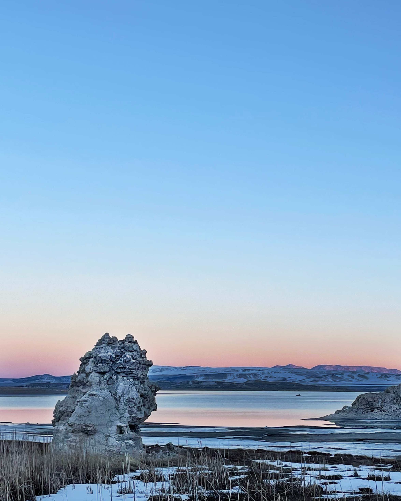

Lab 8: CSS Selectors
Challenge
After creating new lab index, modify the css file. Then I styled every element with a particular CSS selector.
Problem
I had a lot of trouble figuring out proper organization and naming images. I also spent a majority of time trying to figure out padding and image borders for the .summary selection.
Results
The final results are decent, but the overall organization and design still look a bit funky.
